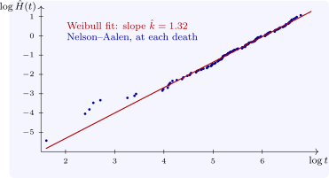

5.2 Using the cumulative hazard to choose a model
The cumulative hazard is the best scale on which to look for a parametric model, because the common families become straight lines:
- exponential: \(H(t) = \lambda t\), so a plot of \(\hat H(t)\) against \(t\) is a straight line through the origin with slope \(\lambda \);
- Weibull: \(\log H(t) = k\log t - k\log \lambda \), so a plot of \(\log \hat H(t)\) against \(\log t\) is a straight line with slope \(k\);
- proportional hazards between two groups, the assumption of the Cox model of a later section: the curves of \(\log \hat H\) for the groups are parallel, a constant vertical distance apart.
For lung, the plot of \(\log \hat H\) against \(\log t\) is close to a straight line (Figure 5), and a least-squares line through it has slope \(1.21\), near the maximum likelihood shape \(\hat k = 1.32\) of the section on parametric models; the curvature at the left, from the first few deaths, is typical and carries little weight. Such plots are informal checks, not tests, but they show at once whether a model is plausible.

The hazard itself, the derivative of \(H\), can be estimated by smoothing the increments \(d_j/n_j\) with a kernel, which gives a picture of how the risk changes over time; the result is noisy unless the data are extensive.
Questions on this section
Stuck on something here? Ask below and it stays attached to this topic.